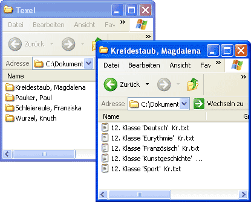

Texel-Hilfe

Einleitung
Beispiele
Überblick
Installation
Organisation
Einstellungen
Schülerdaten
Layout
Dateivorlagen
Schreiben
Einlesen
Korrigieren
Ausdrucken
Lückentexteditor
Kontakt
Eine Zeugnisverwaltung für Waldorfschulen
Für jedes Fach wird jetzt eine Textdatei erzeugt, in die die Kollegen die Fachtexte eintragen.

Dateivorlagen
Erzeugen der Dateivorlagen
Dateivorlagen
Die Dateivorlagen sind einfache Textedateien, in die jeder Kollege seine Fachtexte einträgt. Das kann mit jedem Texteditor, z.B. auch mit Word geschehen. Auch auf einem Mac ist das möglich. Jeder Kollege bekommt für jedes Fach in jeder Klasse eine Datei auf einer Diskette ausgehändigt. Die Diskette sollten nicht zum Speichern der Dateien dienen, sondern nur zum Transport, sonst treten leicht Datenverluste auf. Gespeichert werden sollte immer auf einer Festplatte. Auch eine Sicherungskopie sollte immer erstellt werden. Dafür sorgt aber jeder Kollege selbst.
Erzeugen der Dateivorlagen
Nach dem Einsammeln der Datenblätter für die Schülerdaten und das Layout, werden die Änderungen gemacht. Dann muss für jedes Fach im Layout eine Dateivorlage erzeugt werden. Sollten später noch Fächer hinzukommen, kann diese Fach in das Layout eingegtragen werden und in diesem Formular ausgewählt werden, so dass nur eine einzelne Datei erzeugt wird.
Werden alle Dateien erzeugt, wählt man die Option Dateien in Verzeichnisse einordnen. Für jeden Kollegen wird dann in dem ausgewählten Verzeichnis ein eigenes Unterverzeichnis angelegt, in das alle Dateien für diesen Kollegen abgelegt werden. Werden die Zeugnisse mehrerer Klassen gedruckt, sammeln sich beim Erzeugen aller Dateivorlagen die Dateien des Kollegen in diesem Verzeichnis an. Schließlich können alle Dateien eines Verzeichnisses auf eine Diskette kopiert werden, die dem Kollegen dann überreicht wird.
